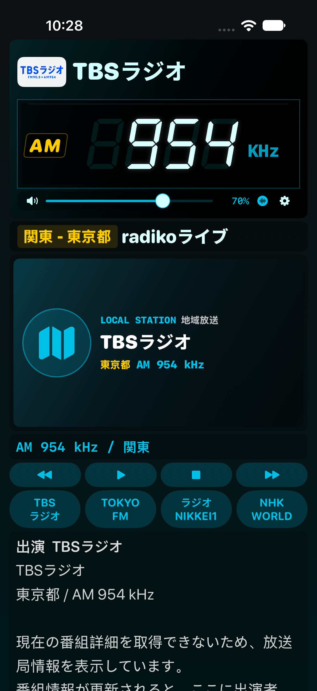

실기기 확인용 시험 빌드
iOS 17.0 이상. SideStore에서 서명해 설치합니다. 기존 앱을 삭제하지 않고 같은 Apple 계정으로 업데이트하세요.
안드로이드 300C r52와 r53 기능 업데이트입니다. City Pop·Kyoto 곡명과 가수명 매칭, 같은 곡의 다국어 앨범 이미지 검증, Big B 공식 곡 정보, MBC 프로그램·코너 소개, 설정창의 실제 버퍼 잔량 표시를 반영했습니다.
r53의 NET 이미지 디스크 캐시와 최근 30회 재생 품질 기록을 추가했습니다. 캐시는 최대 24 MiB·48개로 제한합니다. 준비 시간·재버퍼링·재생 시간·오류 횟수는 설정창에서 확인하며, iOS 재생 상태 관찰값이므로 Android 엔진 내부 통계와 측정 범위가 다를 수 있습니다.
NHK-NET 21개, 일본 TV 16개, 한국 TV 21개로 300C 목록과 일치합니다. 한국 라디오 활성 26개와 주파수는 유지하며 원주 KBS 명칭을 정리했습니다. 제거된 FM GIG·세타가야의 저장값은 복구용으로 보존하고 유효한 선택 채널로 이관합니다.
기존 아이폰 배치·세그먼트·게인 계산과 Build 92의 잡음 수정은 유지합니다. 일본 라디오와 기존 NAS 네이티브 형식의 재생 경로는 그대로입니다. 추가 NAS 형식은 최대 512 MiB 파일을 먼저 내려받아 재생합니다.

실제 iPhone 시뮬레이터 캡처입니다. 방송 편성 내용은 촬영 시각에 따라 달라집니다.
사용 중인 iOS 27 실기기에서의 소리·Bluetooth·NAS 서버·SideStore 설치는 별도 확인이 필요합니다. Android 전용 루팅·차량 런처 팝업·하드웨어 키·강제 음량·자동 실행·개인용 APK 수신/설치와 차량 계정은 가져오지 않습니다. PCM 버퍼 표시는 출력 대기열 측정값이며 VLC 내부 네트워크 버퍼 총량이나 전체 지연을 의미하지 않습니다.
SHA-256f208197c77147471b637db8447000cf00c5316a44cee0a86471bd6db1555bf98